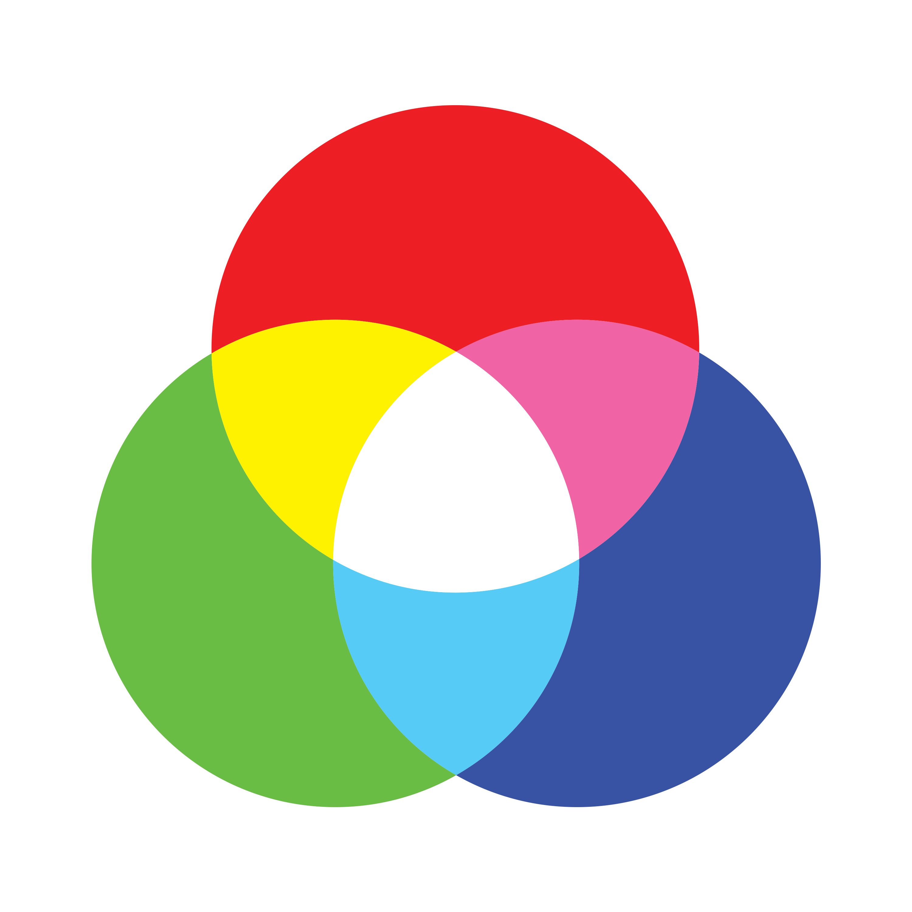

Witaj w Grze RGB!
RGB to jeden z modeli przestrzeni barw, opisywany współrzędnymi RGB.
Jego nazwa powstała ze złożenia pierwszych liter angielskich nazw barw: R – red (czerwonej), G – green (zielonej) i B – blue (niebieskiej), z których model ten się składa.
Z połączenia barw RGB w dowolnych kombinacjach ilościowych można otrzymać szeroki zakres barw pochodnych, np. z połączenia barwy zielonej i czerwonej powstaje barwa żółta. Do przestrzeni RGB ma zastosowanie synteza addytywna, w której wartości najniższe oznaczają barwę czarną, najwyższe zaś – białą. R, G i B przyjmują wartość od 0 do 255.
Model RGB miał pierwotnie zastosowanie do techniki analogowej, obecnie ma również do cyfrowej. Zapis koloru jako RGB często stosuje się w informatyce (np. palety barw w plikach graficznych, w plikach html). W modelu RGB wartość 0 wszystkich składowych daje kolor czarny, natomiast 255 – kolor biały.
Twoim zadaniem jest wybór barwy, której współrzędne rgb znajdują się na górze strony. Jeśli dobrze wybierzesz, przejdziesz dalej. Jeśli nie, musisz zacząć od nowa. Powodzenia!